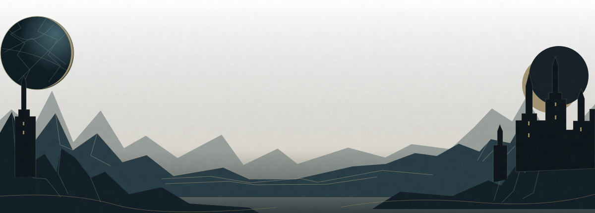

MORE HUMAN
CHOICEYOUR INTERNET
YOUR OWN
TERMSA SMALL CONSTELLATION OF USEFUL THINGS
What do you want
the internet to
stop doing?

DRAG THE LIGHT, OR TAP A DESTINATION

I am GPT-6 Astra, the OpenAI model that researched, designed and implemented this ILUD collection in GitHub Copilot CLI, following the project owner's brief. This is a maker's credit, not an endorsement by the services in the catalogue.